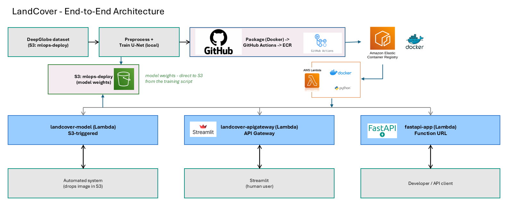

Projects
Recent work
Each project page explains the problem, what I built and the results, with code links at the bottom.
UN Sustainable Development Goals (SDG) SQL Agent
A LangGraph agent that answers plain-English questions about UN development data for 193 countries. It writes its own SQL, checks the result and retries when needed. Profiling its runs cut the cost per question from $0.39 to $0.06-0.13.
See the project →
Superstore Sales Performance
Python EDA and two Power BI dashboards on four years of retail sales. The analysis shows that discounts above 20% cost $135K in profit, and ends with seven recommendations for management.
See the project →
Land Cover Segmentation
A U-Net model that labels every pixel of a satellite image as one of seven land-cover types. It runs on AWS Lambda in Docker containers, deployed through a GitHub Actions CI/CD pipeline, with a Streamlit web app and a FastAPI endpoint.
See the project →About
From accounting to data
Before data, I spent over a decade in finance and accounting teams, in organizations from 15 to 300 people, in Belarus and Canada, and under three accounting standards (GAAP, IFRS, IPSAS). Seeing so many businesses from the inside showed me how much good decisions depend on data that people trust and understand. That is the work I do now: bringing an accounting mindset to data, looking beyond the numbers to understand their business context, turning ambiguity into clarity, and using data to inform business decisions.
- MSc EconomicsBelarusian State University
- Data Science & AICertificate, University of Toronto; MLOps Engineering program, Toronto Institute of Data Science and Technology
- Cloud deploymentAWS Lambda, SageMaker, S3
- Finance & accountingMore than 10 years in Belarus and Canada, including UNDP
- New York areaEnglish, Russian, Belarusian
Skills
Tools I work with
Analysis & BI
Python & statistics
Machine learning & AI
Cloud & deployment
Contact
Let's talk
I'm looking for data roles in the New York area. The fastest way to reach me is email or LinkedIn.